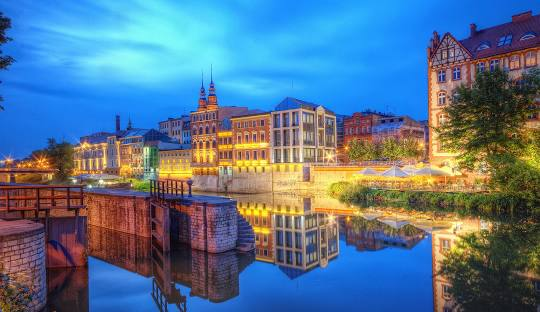

Opolskie
Najważniejsze miasta
Opole
Opole to stolica polskiej piosenki, znana z corocznego Krajowego Festiwalu Piosenki Polskiej. Warto odwiedzić malowniczą Wyspę Bolko oraz zobaczyć opolski rynek z charakterystycznym ratuszem w stylu włoskiego renesansu. Wieża Piastowska
Jeden z najstarszych zabytków Opola, pozostałość po średniowiecznym zamku Piastów. Z jej szczytu roztacza się piękna panorama miasta.
Muzeum Polskiej Piosenki
Unikalne miejsce poświęcone historii polskiej muzyki rozrywkowej. Można tu posłuchać przebojów, zobaczyć archiwalne nagrania i nagrać własną piosenkę.
Wyspa Bolko
Zielona oaza w centrum miasta, idealna do spacerów i rekreacji. Znajduje się tu również opolskie zoo, jedno z najładniejszych w Polsce.